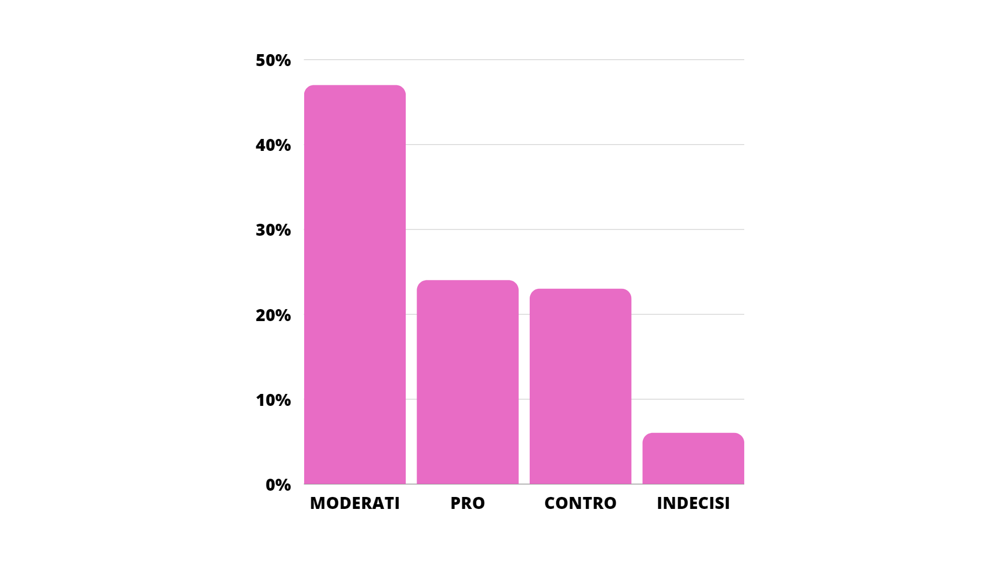
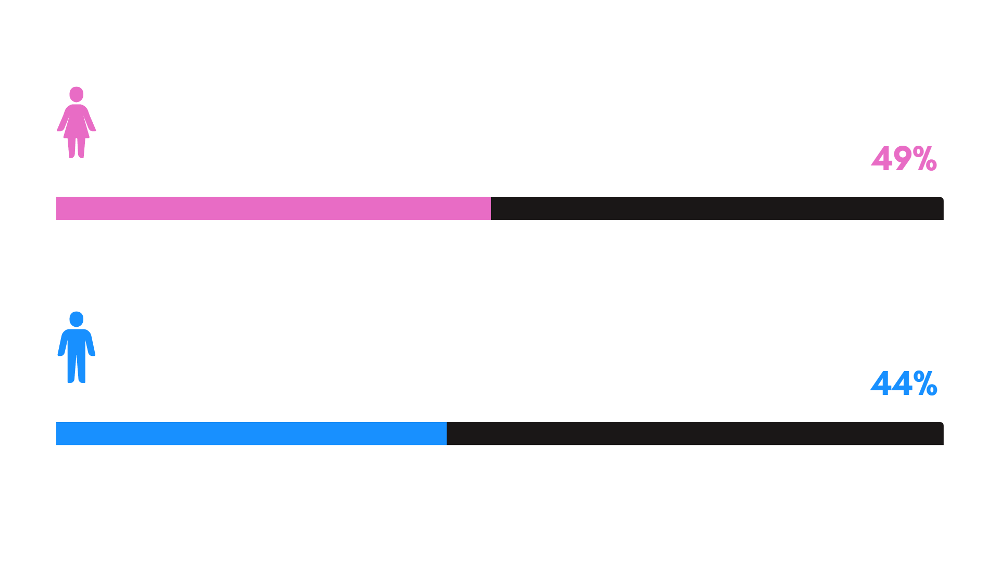
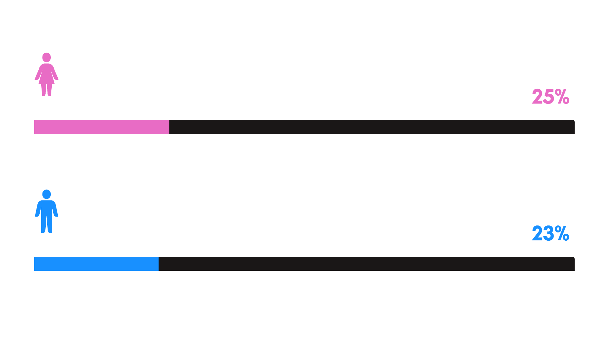
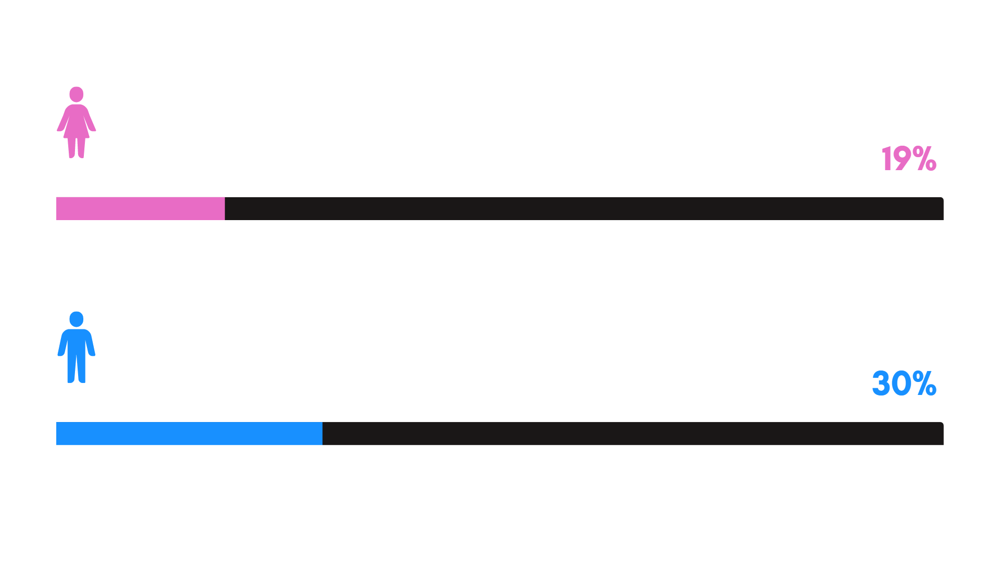
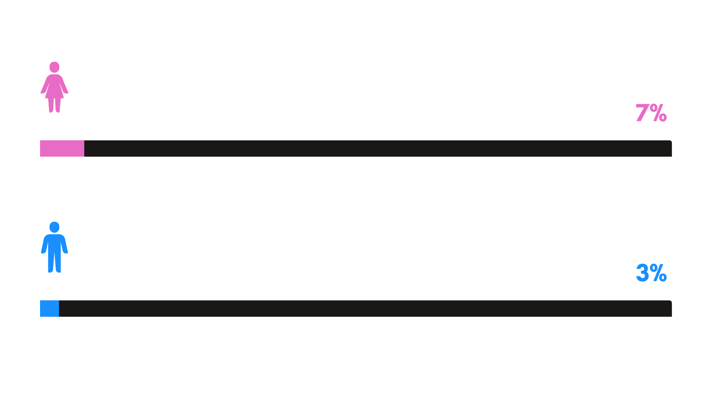
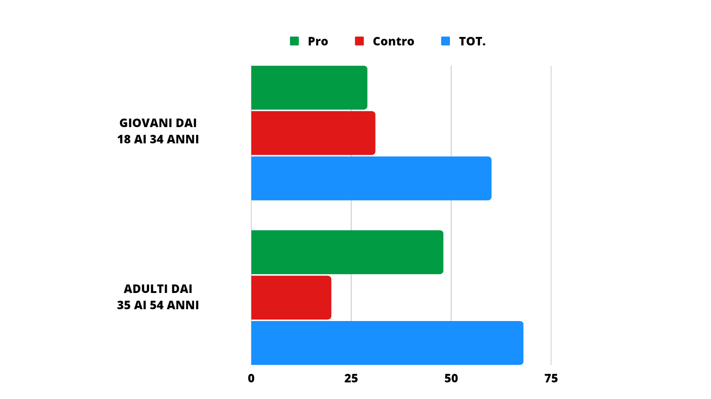

UN'ITALIA DIVISA
ITALIANI CHE SI SONO ESPRESSI RIGUARDO ALLE QUOTE DI GENERE

Come si dividono i moderati in relazione al genere?

la percentuale si riferisce al 100% del genere stesso*
Come si dividono i sostenitori in relazione al genere?

la percentuale si riferisce al 100% del genere stesso*
Come si dividono i contrari in relazione al genere?

la percentuale si riferisce al 100% del genere stesso*
Come si dividono gli astenuti in relazione al genere?

la percentuale si riferisce al 100% del genere stesso*
Il citato sondaggio dell’ISPO, Istituto per gli Studi sulla Pubblica Opinione, pubblicato su “Huffingtonpost” il
12 marzo 2014, mostra un’Italia divisa sul tema delle preferenze di genere.
GIOVANI ED ADULTI IN MERITO

Le persone favorevoli senza ripensamenti alla parità di genere sono più numerose nella fascia 35-54 anni e non, come potremmo aspettarci, nella fascia 18-34.
Per quanto riguarda l’età, il risultato è parzialmente sorprendente.